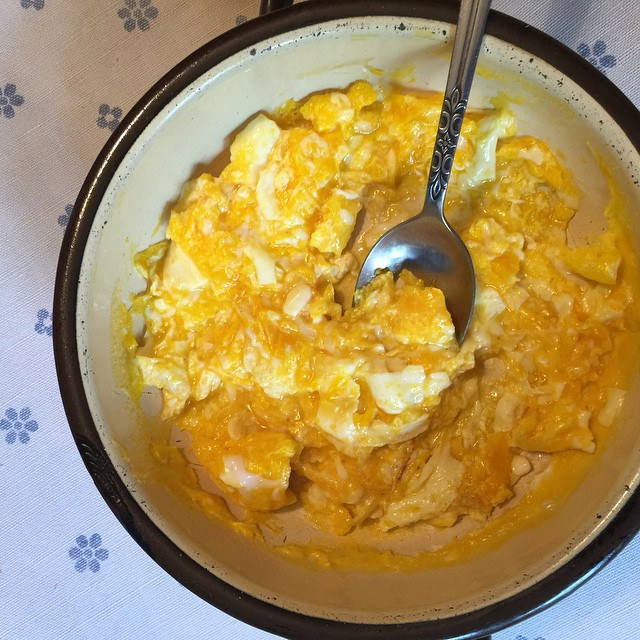

Huevos Revueltos

En esta receta aprenderás a preparar la mejor paila de huevos revueltos, perfectos para comenzar -o terminar- tu día
Ingredientes
- pan, de preferencia ciabatta
- huevos
- mantequilla
- aceite de oliva
- sal a gusto
Preparación
- poner el sartén a fuego fuerte
- añadir una cucharada de aceite de oliva, cosa que 3/4 del sartén queden ocupados por éste
- agregar los huevos y comenzar a revolver con una cuchara de madera sólo las claras rápidamente evitando tocar las yemas
- pasados unos 30 segundos, alejar del fuego y continuar revolviendo mientras se añade la mantequilla
- seguir revolviendo y poner sobre el fuego fuerte nuevamente
- cuando estén las claras blancas y más o menos consistentes, reventar las yemas para que toda la mezcle quede bien húmeda
- ir controlando la cocción sacando y poniendo sobre el fuego
- una vez listo, según criterio y gusto personal, servir sobre un plato y disfrutar a preferencia
Inicio